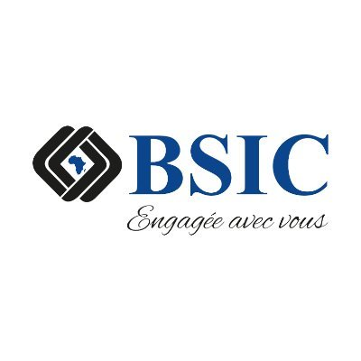

01
Mai 2025 — Aujourd’huiExploitation
Assistant d’exploitation IT & Support applicatif N1/N2

BSIC TOGO S.A. · Lomé18GAB supervisés>98 %Disponibilité GABN1/N2Support applicatif2 outilsGLPI + SOPRA
- Assurer le support N1/N2 du Core Banking Amplitude et des applications bancaires : qualification, diagnostic, résolution, escalade et suivi jusqu’à la clôture.
- Superviser les traitements EOD/Cut Off, contrôler les états de production et coordonner les vérifications avec les équipes métier pendant les périodes sensibles.
- Surveiller 18 GAB NCR/Wincor via ATM VIEW, maintenir une disponibilité supérieure à 98 % et coordonner les interventions des prestataires.
- Exploiter des requêtes SQL de consultation, contrôle et extraction pour accélérer les investigations en production.
- Gérer les incidents dans GLPI et SOPRA, suivre les SLA, escalades et actions correctives, puis documenter les résolutions et procédures.
- Administrer les comptes et droits Active Directory et assurer le support Windows, LAN, DHCP et VPN.